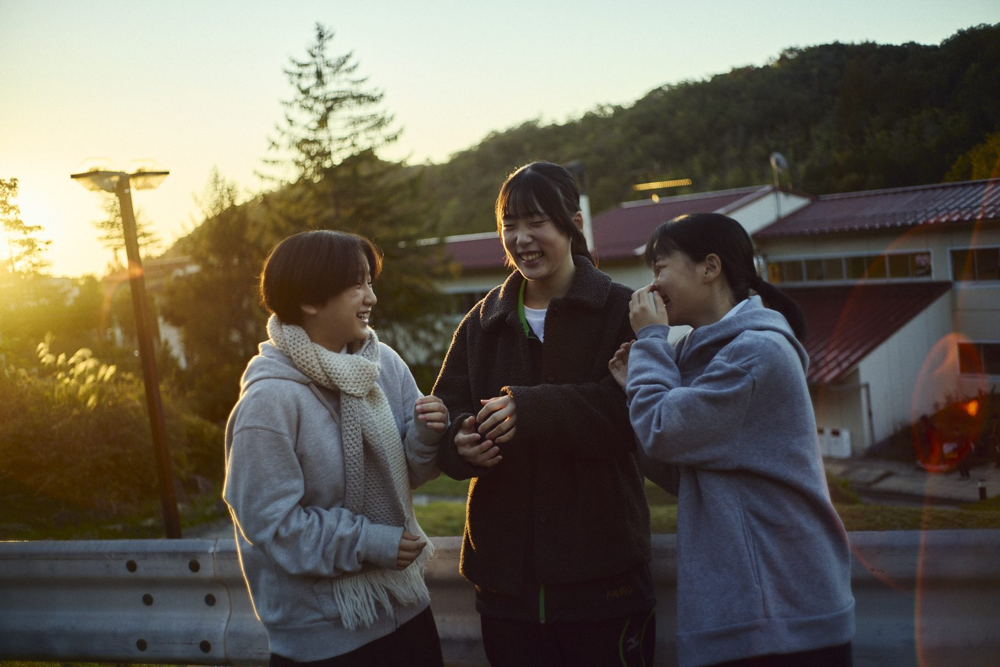
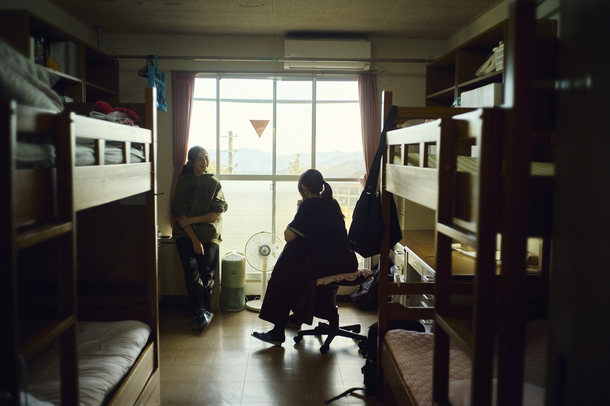
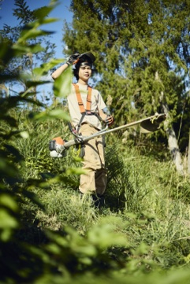
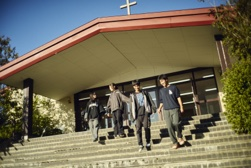

写真（仮置き）
知性問いを立て、動かす力正解のない時代に、自分で問いを見つけ、考え、社会に働きかける力。写真（取材予定）
Before人影に隠れているような、引っ込み思案な子After祈祷週の礼拝で、大勢の前で3年間の学びを話した
親元にいたらできなかった成長だと思いました。高2保護者

To Live, To Grow
広島県三原市大和町AIが答えを出してくれる時代に、
知識だけでは足りない。
必要なのは、自分の軸を持って生きること。
親元を離れ、仲間と暮らし、
土に触れ、祈り、問いを立てる。
広島三育学院の6年間は、
その軸を育てる時間です。
Do for Others
in Christ
「だから、何事でも人々からしてほしいと望むことは、人々にもそのとおりにせよ」
マタイによる福音書 7章12節三育の教育は、4つの動詞でできています。主語は、いつも生徒です。

親元を離れて、
誰かと暮らす。
それが、いちばんの教育。
答えを覚えるより、
問いを持つ。

教室の外に、
本物の学びがある。
何のために、生きるのか。
6年間、問い続ける。
寮・授業・食事・労作・礼拝・地域。別々の活動ではなく、毎日の暮らしの中でつながっています。カリキュラムの柱は、信仰と学びと経験の統合（IFLL）です。
全寮制を、
子どもに贈ろう。
親元を離れることは、手放すことではありません。自分で暮らし、自分で選ぶ6年間を、贈ることです。
親元にいたらできなかった成長だと思いました。高2保護者
当たり前のように動く姿に、寮生活で身についた習慣と成長を感じています。高1保護者
成長を信じて待てるようになった。中1保護者
「管理する親」から「見守る親」へ。
変わったのは、子どもだけではありませんでした。口出しが減り、信じて待てるようになった。そんな声が、保護者のほぼ全員から届いています。
一緒には暮らしていませんが、以前より心の距離が近くなったと感じています。
そんなに言う必要はなかった。やれば何でも、この子は自分でできるのだと。
寮なんかに入れて寂しくないの？とよく言われるけれど、こんな経験をプレゼントしてあげられることを誇りに思っています。
の保護者が「身の回りのことを自分でするようになった」と回答
の生徒が音楽活動に参加。運動部との両立も可能
が大学・専門学校へ進学。関東・関西を中心に全国へ
の四年制大学進学者が、年内入試（総合型・推薦）を活用
出典：在校生保護者アンケート（37件）、学校資料（23〜25年度卒業生）

6年間の経験が、そのまま自分の言葉で語れる志望理由になります。
進学先の例：国際基督教大、国際教養大、東北大、広島大、東京藝術大、聖マリアンナ医科大 ほか
全国・全世界に広がる卒業生のつながり。
世界中の教会が、卒業後も帰れる場所になる。
2027年、開校50周年。半世紀分の卒業生がいます。